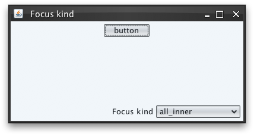
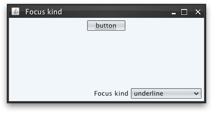

|
Description |
Client property name for specifying the kind of focus indication on
buttons, check boxes and radio buttons. The value should be one of
SubstanceConstants.FocusKind
enum. This property can be set
either as client property on some component or as global property on
UIManager.
In order to compute the kind of focus indication for some component, the
component's hierarchy is traversed bottom up. The first component that
has this property set, defines the focus indication kind. Finally, if
neither component not its ancestors define this property, the global
setting on UIManager is checked.
If there is no global setting, the default
SubstanceConstants.FocusKind.ALL_INNER is used.
|
|
Sample code |
import java.awt.*;
import java.awt.event.ActionEvent;
import java.awt.event.ActionListener;
import javax.swing.*;
import org.pushingpixels.substance.api.SubstanceLookAndFeel;
import org.pushingpixels.substance.api.SubstanceConstants.FocusKind;
import org.pushingpixels.substance.api.renderers.SubstanceDefaultComboBoxRenderer;
import org.pushingpixels.substance.api.skin.BusinessBlackSteelSkin;
/**
* Test application that shows the use of the
* {@link SubstanceLookAndFeel#FOCUS_KIND} client property.
*
* @author Kirill Grouchnikov
* @see SubstanceLookAndFeel#FOCUS_KIND
*/
public class FocusKindProperty extends JFrame {
/**
* Creates the main frame for <code>this</code> sample.
*/
public FocusKindProperty() {
super("Focus kind");
setLayout(new BorderLayout());
final JButton button1 = new JButton("button");
JPanel main = new JPanel(new FlowLayout(FlowLayout.CENTER));
this.add(main, BorderLayout.CENTER);
main.add(button1);
JPanel controls = new JPanel(new FlowLayout(FlowLayout.RIGHT));
final JComboBox focusKindCombo = new JComboBox(
new Object[] { FocusKind.NONE, FocusKind.ALL,
FocusKind.ALL_INNER, FocusKind.TEXT,
FocusKind.UNDERLINE, FocusKind.STRONG_UNDERLINE });
focusKindCombo.setRenderer(new SubstanceDefaultComboBoxRenderer(
focusKindCombo) {
@Override
public Component getListCellRendererComponent(JList list,
Object value, int index, boolean isSelected,
boolean cellHasFocus) {
FocusKind mgfk = (FocusKind) value;
return super.getListCellRendererComponent(list, mgfk.name()
.toLowerCase(), index, isSelected, cellHasFocus);
}
});
focusKindCombo.setSelectedItem(FocusKind.ALL_INNER);
focusKindCombo.addActionListener(new ActionListener() {
public void actionPerformed(ActionEvent e) {
// based on the selected value, set focus kind on the
// button and request focus
button1.putClientProperty(SubstanceLookAndFeel.FOCUS_KIND,
focusKindCombo.getSelectedItem());
button1.requestFocus();
}
});
controls.add(new JLabel("Focus kind"));
controls.add(focusKindCombo);
this.add(controls, BorderLayout.SOUTH);
this.setSize(400, 200);
setLocationRelativeTo(null);
setDefaultCloseOperation(JFrame.EXIT_ON_CLOSE);
}
/**
* The main method for <code>this</code> sample. The arguments are ignored.
*
* @param args
* Ignored.
*/
public static void main(String[] args) {
JFrame.setDefaultLookAndFeelDecorated(true);
SwingUtilities.invokeLater(new Runnable() {
public void run() {
SubstanceLookAndFeel.setSkin(new BusinessBlackSteelSkin());
new FocusKindProperty().setVisible(true);
}
});
}
}
The screenshot below shows application frame with focused button
that uses the default
SubstanceConstants.FocusKind.ALL_INNER
focus kind:

The screenshot below shows application frame with focused button
that uses the
SubstanceConstants.FocusKind.UNDERLINE
focus kind:

|